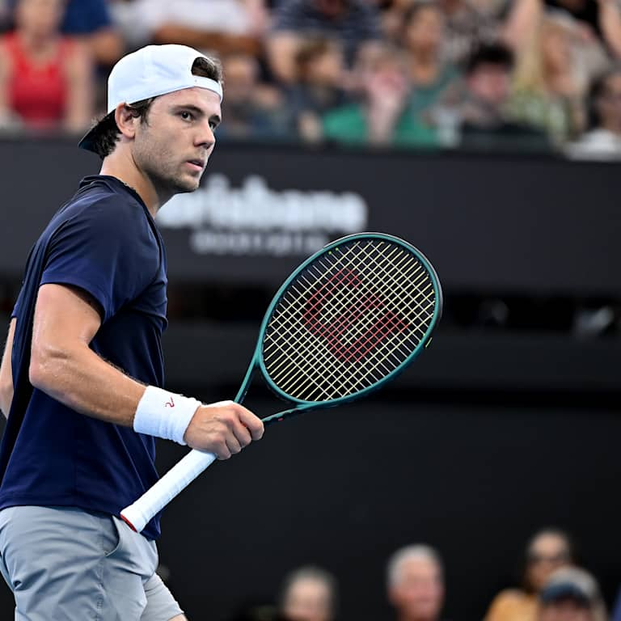

One of my favorite hobbies is playing tennis. Tennis is a fast-paced sport that requires physical fitness, concentration, and strategy. I enjoy both singles and doubles matches, as each format has its own challenges.

Tennis helps me stay active and improves my endurance, coordination, and reaction time. It is also a great way to relieve stress and clear my mind after a busy day.

Another reason I like tennis is that it can be played both recreationally and competitively. Whether practicing serves or playing a match with friends, I always find it enjoyable.
